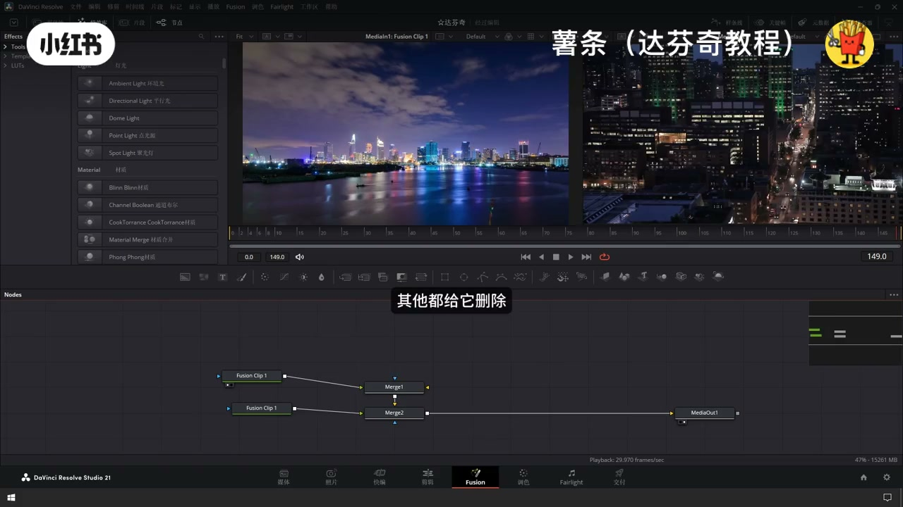
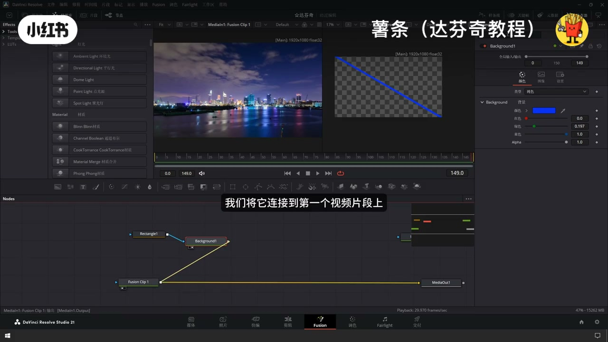
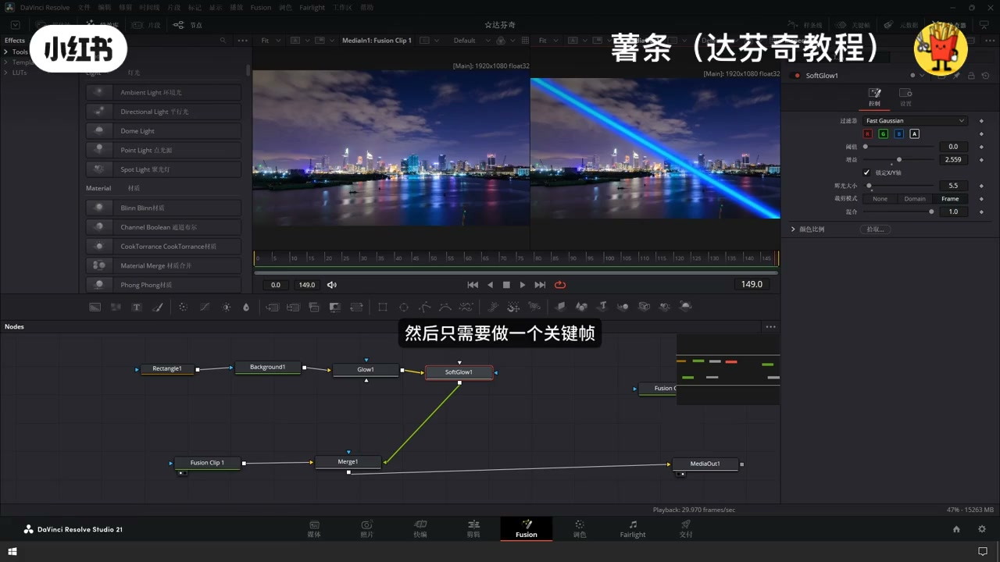
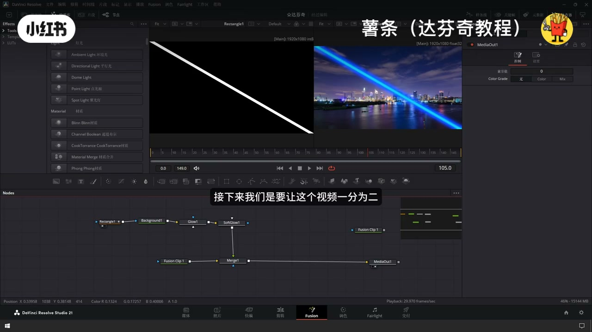
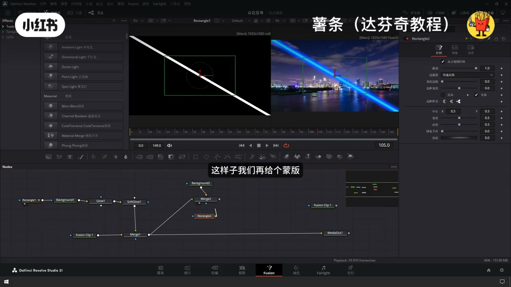
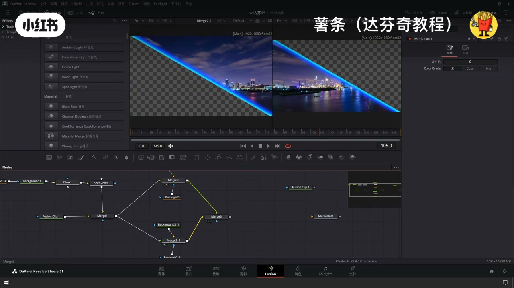
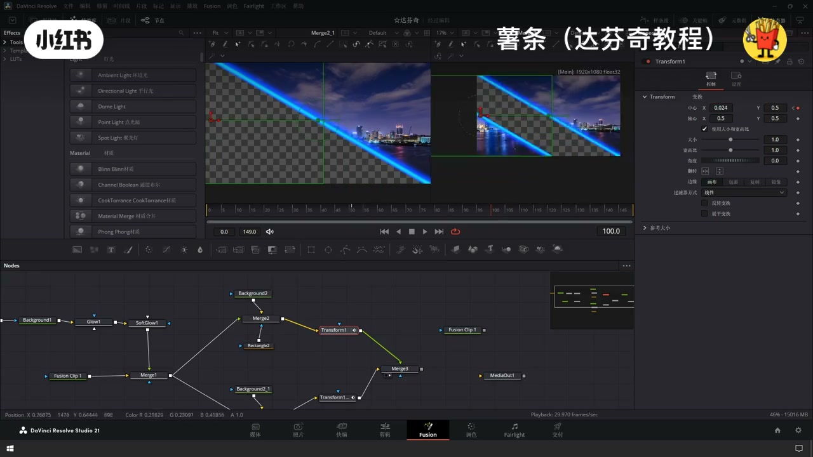
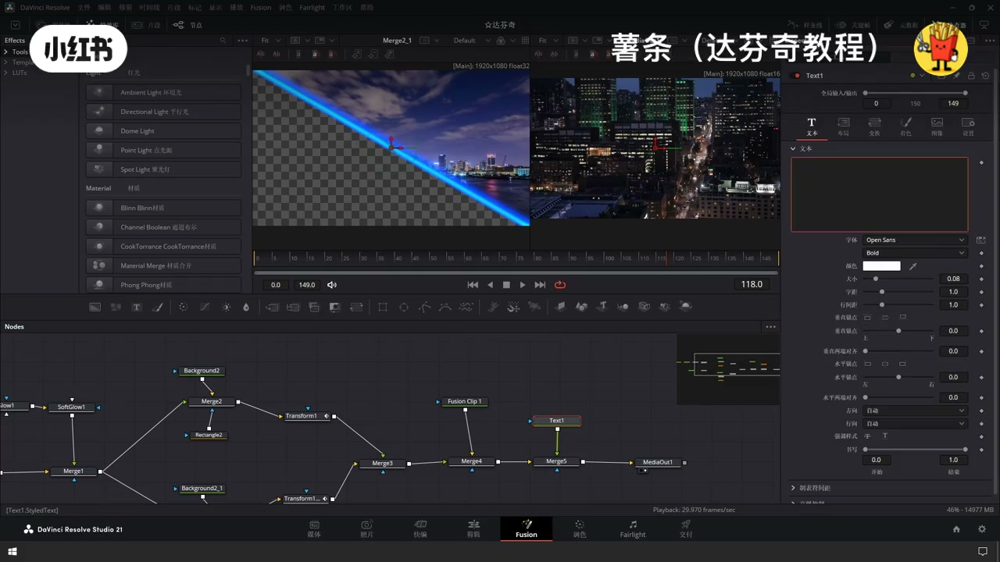

内容要点
「🔥达芬奇光线分屏切割开场｜高级片头氛围感」教程要点：一分鐘教會你在達芬器裡 → 製作光線分屏切割開場的效果 → 首先導入需要的素材到天線 → 再加兩段素材上下疊放…
知识结构
一分鐘教會你在達芬器裡
效果轉然後只需要做一個關鍵針
前景的板
- 一分鐘教會你在達芬器裡
- 製作光線分屏切割開場的效果
- 首先導入需要的素材到天線
- 再加兩段素材上下疊放
- 來協調不需要的片段
一分鐘教會你在達芬器裡
00:00–01:56一分鐘教會你在達芬器裡
一分鐘教會你在達芬器裡；製作光線分屏切割開場的效果；首先導入需要的素材到天線；再加兩段素材上下疊放；來協調不需要的片段；選中兩段素材右鍵；聽鍵Fusion片段；然後在；Fusion頁面中打開；你會看到它自動創建了很多節點；但是我們只需要兩個視頻片段就可以了；其他都給它刪除；這個是前景；我們分割的那個畫面；先做這個；我們先做光線的效果；從左上角這個光線滑到右下角；這個我們需要拖動一個背景；來拖動一個；舉行連接到背景節點上；打開檢查器；在檢查器裡面調整背景的顏色；這是我們光線的顏色；然後這個門板用來控制這個背景的形狀；然後再給它旋轉一個角度；這樣子；從左上角到右下角的；我們將它連接到一個視頻片段上；它會自動創建一個合併節點；藍色的這個是前景；藍色的這個是前景；黃色的這個是背景；接下來我們是要讓這個藍色的距離發光；修復的加控；來一個推光節點；調整一下參數；再加一顆融光紙；好的這樣子


01:55–03:47效果轉然後只需要做一個關鍵針
效果轉然後只需要做一個關鍵針；往上角滑到右下角；那我們在第一個節點；我們在第一個節點；我們在第一個節點；我們在第一個節點；我們在第一個節點；我們在第一個節點；第一個節點；第一個這個門板節點；打關鍵針；我們將；切到定靈針；定靈針把它移出畫面；我們先打個關鍵針；差不多50幀；我們再把它移回畫面；讓融光看一下效果；接下來我們是要讓這個視頻一分為二；被光線切到開之後；左邊的這個往下；右邊的這個往上；讓我們可以再創建這個；再創建一個背景節點；再創建一個合併節點；背景節點；合併節點；背景圖；把這個連接到它的；前景；綠色的是前景黃色的是背景；好的；現在我們把這個連接到；前景圖；我們把這個連接到前景圖；背景的二法的定靈；讓它就是透明的；這樣子我們再給個


03:46–06:44前景的板
前景的板；就可以對這個畫面來切；這樣子我們就切割反了一遍；固定；再切割下一遍；好；旋轉；這樣子兩邊都切割好了；我們再給它進行一個合併；它是兩點；我們再拍一點點；畫邊緣；這樣子又給它偏接到一塊；接下來我們要讓它從左邊的往左下角走；右邊的往右；我們再給個；變換接地；完全分割的那一邊；然後再中心點；拿一個關鍵針；然後；出畫面；上面也是這樣；畫面外；這樣子我們再看一下效果；OK；然後我們把視頻2帶合併出來；連接到；把前景跟背景；調換一下；OK；最後我們再來一段文字；讓它出場；先打幾個字；大小打上關鍵字；OK；這樣子




口述/画面要点（40段）
结合 Whisper medium 与画面大字整理；专有名词已校对。
一分鐘教會你在達芬器裡
製作光線分屏切割開場的效果
首先導入需要的素材到天線
再加兩段素材上下疊放
來協調不需要的片段
選中兩段素材右鍵
聽鍵Fusion片段
然後在
Fusion頁面中打開
你會看到它自動創建了很多節點
但是我們只需要兩個視頻片段就可以了
其他都給它刪除
這個是前景
我們分割的那個畫面
先做這個
我們先做光線的效果
從左上角這個光線滑到右下角
這個我們需要拖動一個背景
來拖動一個
舉行連接到背景節點上
打開檢查器
在檢查器裡面調整背景的顏色
這是我們光線的顏色
然後這個門板用來控制這個背景的形狀
然後再給它旋轉一個角度
這樣子
從左上角到右下角的
我們將它連接到一個視頻片段上
它會自動創建一個合併節點
藍色的這個是前景
藍色的這個是前景
黃色的這個是背景
接下來我們是要讓這個藍色的距離發光
修復的加控
來一個推光節點
調整一下參數
再加一顆融光紙
好的這樣子
效果轉然後只需要做一個關鍵針
往上角滑到右下角